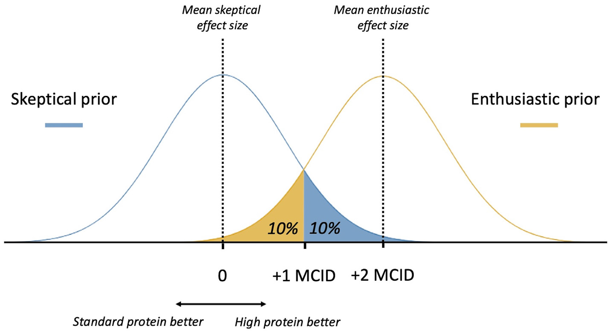

PRECISe trial: bayesian analysis
Secondary Outcome: handgrip strength
PRECISe trial
The PRECISe trial is an investigator-initiated pragmatic, binational multi-center, randomized controlled, quadruple-blinded study, designed to assess the effect of high protein enteral nutrition (target 2.0 g/kg/day) vs standard protein enteral nutrition (target 1.3 g/kg/day) on functional recovery at 30 days, 60 days, and 180 days following ICU admission, including health-related quality of life, measures of muscle strength, physical function, and mental. health. The trial’s primary endpoint is health-related quality of life as measured by the Euro-QoL-5D-5-level (EQ-5D-5L) questionnaire Health Utility Score. Between-group differences of the primary and other sequential endpoints will be assessed over the three time points using linear mixed-effects models.
Enrolment Criteria and interventions
Adult patients 18 years and above with an unplanned admission to the ICU, being mechanically ventilated within 24 h following ICU admission, and with an expected duration of mechanical ventilation of at least 3 days (i.e., indication for enteral nutrition support) were included. Exclusion criteria are; contraindication for enteral nutrition at the discretion of the treating physician, moribund or expected withholding of treatment, kidney failure without the possibility of dialysis, hepatic encephalopathy West Haven criteria 3e4, or a body mass index <18 kg/m2.
Patients were randomized in a 1:1 ratio, using permuted block randomization with varying blocks of 4 or 6 patients per center, into one of the two intervention groups. One group received enteral nutrition with a high protein content of 8g/100 kcal (expected intake 1,6e2,0 g/kg/day), and the other group received enteral nutrition with a standard protein content of 5g/100 kcal (expected intake 0,8e1,25 g/kg/day).
Principles of Bayesian analysis
A cornerstone of Bayesian inference is the incorporation of prior beliefs about an effect estimate (the prior) into the calculation of the posterior probability of that effect estimate (the posterior), following the emergence of novel evidence (the likelihood). This methodology resembles clinical reasoning, where one’s strong belief (either enthusiastic or skeptical) towards a certain treatment, based on solid evidence or convincing clinical experience is less likely to be affected by new evidence than one’s neutral attitude towards a specific treatment. In Bayesian inference, prior beliefs are either informative (based on evidence or clinical experience) or non-/weakly informative. Such a weakly informative prior aims to yield posterior probabilities that are influenced almost exclusively by the actual trial data. Given the potential influence of informed priors on posterior probability distributions, it is essential to define priors realistically and before trial results become available (Kruschke (2021)).
Historically, clinical trials have been evaluated by the use of frequentist inference, by which the probability of the data is tested, assuming the null hypothesis (no difference). Such an approach heavily depends on the trial’s power, which in turn is the result of the included sample size and the treatment effect. Clinical trials are often time- and resource-consuming, which has led investigators to base their sample size calculation on an (optimistic) expected treatment effect, rather than a clinically important treatment effect. When the null hypothesis is not rejected in these cases, this may be the consequence of a reduced power, and this might cause critical care physicians to abandon therapies that have a potentially clinically important benefit (Yarnell et al. (2021)). In contrast, the Bayesian frameworks allows the direct estimation of the posterior probability of any treatment effect, including the MCID. Finally, the incorporation of prior data may facilitate a more feasible sample size calculation, while the use of reference priors (such as enthusiastic and skeptical priors) can assess the robustness of the findings.
This secondary analysis will assess several outcomes and subgroups that were deemed most relevant to the overall study aim. The following outcomes will be assessed: EQ-5D-5L health utility score (longitudinal analysis), 6-min walking test and handgrip strength over the entire follow-up period (longitudinal analyses), 60-day mortality, duration of mechanical ventilation as well as EQ-5D-5L health utility scores at 30, 90 and 180 days (cross-sectional analyses). Based on the available literature, patients with acute renal failure, sepsis and non-sepsis, and severe multi-organ failure at ICU admission were identified as relevant subgroups. Acute renal failure is determined using the Kidney Disease: Improving Global Outcome (KDIGO) criteria for acute kidney injury (AKI) as stage I or higher. Sepsis is defined according to the Sepsis III criteria. Severe multi-organ failure is assessed using the Sequential Organ Failure Assessment (SOFA) score, for which we will use the median value of the SOFA score in our patient population to dichotomize patients with severe multi-organ failure (severe multiorgan failure will be defined as patients with \(\geq\) median SOFA score). Finally, Non-surviving patients will be assigned an EQ-5D-5L health utility score of 0, in agreement with the trial protocol.
Statistical Analysis
The Bayesian analyses will be performed using dedicated software, including R (R Core Team et al. (2013)) and JASP (Gronau et al. (2019)), which rely on the freely-available Bayesian software JAGS (Plummer (2004)) to implement the models under a Bayesian framework via Markov Chain Monte Carlo methods (Brooks (1998)). Baseline data will be presented in the primary trial publication as specified elsewhere. If prior data from previous randomized trials is available to formulate an informative (literature-based) prior, such a prior will be incorporated. When no prior trial data are available, analyses will be performed under a weakly informative prior. In addition, skeptical and enthusiastic priors will be used to assess the robustness of the results. In the following sections, the components of the Bayesian analyses will be outlined.
Priors
For each endpoint, an MCID is derived from the literature (Table 1).
| Outcome | Effect size and Approach | Non-info (mean, sd) | Info (mean, sd) | MCID |
|---|---|---|---|---|
| EQ-5D | MD, longitudinal | (0,6) | 0.06 | |
| 6MWT | MD, longitudinal | (0,1900) | 19 | |
| HGS | MD, longitudinal | (0,500) | 5 | |
| Duration of MV | MD, cross-sectional | (0,100) | (-0.42, 0.30) | 1 |
| 60-day mortality | OR, cross-sectional | (0, 3.0) | (-0.02, 0.09) | 5% ARD |
| EQ-5D (30 days) | MD, cross-sectional | (0,6) | 0.06 | |
| EQ-5D (90 days) | MD, cross-sectional | (0,6) | 0.06 | |
| EQ-5D (180 days) | MD, cross-sectional | (0,6) | 0.06 | |
| EQ-5D (Sepsis yes/no) | MD, longitudinal | (0,6) | 0.06 | |
| EQ-5D (AKI yes/no) | MD, longitudinal | (0,6) | 0.06 | |
| EQ-5D (Fail yes/no) | MD, longitudinal | (0,6) | 0.06 |
For all analyses, we will use weakly informative priors centered around ‘no effect’ (for example a mean difference MD of 0, or an odds ratio OR of 1 0 on the log OR scale). For the binary outcomes (ORs, denoted as the log of the OR), a mean of 0 will be applied for the weakly informative prior, while the standard deviation (SD) will be set to 3 on the log OR scale, to capture all credible effect sizes. For the continuous outcomes (on the MD scale), we aim to be consistent and reproducible, but will also allow the distributions to capture all plausible effect sizes. As such, the standard deviation (SD) will be based on a multiplication of the MCID (x100). Table 1 presents the numerical values of these weakly informative priors. Skeptical and enthusiastic priors are defined following a modification of the approach suggested by de Grooth and Elbers (Grooth & Elbers (2022)). Skeptical priors will be centered at a mean difference (MD) or log OR of 0. The distribution will incorporate a \(<10\%\) probability that the estimated treatment effect will exceed +1 MCID. Conversely, the enthusiastic priors are centered around an effect of +2 MCID, and will follow a similar distribution with a probability of \(<10\%\) that estimated effect size will be lower than +1 MCID (Figure 1).
For the cross-sectional endpoints “60-day mortality” and “duration of mechanical ventilation”, informative priors could be derived from a meta-analysis of randomized trials addressing the clinical effectiveness of high protein nutrition in critical illness, which has recently been updated by the same authors after the publication of the EFFORT Protein trial. Data from this updated meta-analysis that are relevant to the current Bayesian analysis protocol were kindly shared with us by the authors prior to publication. This meta-analysis also contains one study that reports on EQ-5D-5L, albeit on a survivors-only analysis. Since the PRECISe trial uses a complete-case analysis (including non-survivors), these data could not be used to formulate a reasonable literature based prior for the estimation of the treatment effect on this outcome. Therefore, cross-sectional and longitudinal analyses of EQ-5D-5L will be performed under weakly informative priors, skeptical priors, and enthusiastic priors.
Finally, as all analyses will be performed with adjustment for the random center effect, a prior for this effect is uniformly formulated as well. These models incorporate random intercepts and the prior for these random effects follow a normal distribution with an effect centered around a mean of 0 and a large standard deviation, similar to the other priors. Posterior distributions will be presented as MDs or mean ARDs and median OR, accompanied by \(95\%\) credible intervals (CrI), and reference to the used priors. Furthermore, full posterior probability distributions will be presented in dedicated grid plots.
Analysis methods and assumptions
The primary outcome is the EQ-5D-5L health utility score over the first 180 days following ICU admission. A pre-planned interim safety analysis revealed a bimodal distribution for EQ-5D-5L since non-survivors (39% during interim analysis) were attributed with a health utility score of zero. Given this mixture distribution (the component of zero, and the component other than 0) we will specify separate priors per longitudinally assessed outcome. Consequently, we will specify a prior for the mean difference with an EQ-5D-5L other than 0, and a prior for the proportion of patients who have an EQ-5D-5L score of 0 (i.e., deceased patients). This longitudinal analysis will be performed with adjustment for center as a random effect. The results of the analyses for the components will be presented separately and as weighted averages.
Secondary outcomes for which no prior evidence was available are the 6-min walking test and hand grip strength. As such, the posterior probabilities of these outcomes will be estimated under a weakly informative prior, in a model similar to the longitudinally assessed primary outcome, with adjustment for the random effect of center. Based on these probability distributions, the probability of clinically important benefit and harm will be estimated. Secondary binary outcomes, such as 60-day mortality, will be expressed in ORs and absolute risk differences (ARD). These binary outcomes will be analyzed in a binary mixed regression model (Bernoulli distribution) with an adjustment for the random center effect. Priors for these binary outcomes are specified on the log OR scale. Other secondary continuous outcomes, such as the duration of mechanical ventilation, will be reported in mean difference (MD) for the specific units of that endpoint. Also for these analyses, the posterior probabilities of a clinically meaningful benefit and clinically important harm will be estimated. Finally, the same mixture distribution (the component of zero, and the component other than 0) will be used for the EQ-5D-5L assessment at the cross-sectional time points, and separate priors will be formulated, similar to the primary outcome assessment.
As outcome missing values are assumed to fully depend on the observed data, and in agreement with the protocol for the frequentist analysis of our study, for all analyses we rely on a missing at random (MAR) assumption about the mechanism responsible for the occurrence of missing values (Little & Rubin (2019)). We rely on linear mixed effects models to analyse the complete (missing and observed) data as they are typically considered appropriate to handle missingness under MAR.
All Bayesian models for our analysis are implemented in JAGS using MCMC algorithms, and implemented via R through the R2jags package (Su et al. (2015)). Assessment of model convergence will be performed for key model parameters via potential scale reduction factors (Rhat) effective sample size (ESS), and other diagnostics such as density and trace plots. Model fit will be assessed in relative terms through the deviance information criterion (DIC and other criteria alike), and in absolute terms by use of posterior prediction checks (PPCs).
Data Description
Table 2 and Table 3 report summary statistics, either across or by treatment arm (0=standard,1=intervention), for key variables collected in the study at baseline. These include: center, sex (f/m), age (years), diabetes (y/n), admission type, covid (y/n), AKI (y/n), sepsis (y/n), multiple organ failure (y/n), weight (Kg), height (cm), BMI, EQ-5D utility score. The summary statistics displayed for each baseline variable include: number of unobserved values (unknown), mean (sd) for continuous variables, and number of observed values (\(\%\)) for categorical variables.
Variable |
N obs% |
N = 935 1 |
|---|---|---|
| trt | 935 100% | |
| 0 | 465 (50%) | |
| 1 | 470 (50%) | |
| Unknown | 0 | |
| center_f | 935 100% | |
| 1 | 239 (26%) | |
| 2 | 14 (1.5%) | |
| 3 | 239 (26%) | |
| 4 | 72 (7.7%) | |
| 5 | 134 (14%) | |
| 6 | 76 (8.1%) | |
| 7 | 24 (2.6%) | |
| 8 | 41 (4.4%) | |
| 9 | 35 (3.7%) | |
| 10 | 61 (6.5%) | |
| Unknown | 0 | |
| sex_f | 935 100% | |
| 0 | 600 (64%) | |
| 1 | 335 (36%) | |
| Unknown | 0 | |
| diabete_f | 935 100% | |
| 0 | 761 (81%) | |
| 1 | 174 (19%) | |
| Unknown | 0 | |
| admission_f | 935 100% | |
| 0 | 649 (69%) | |
| 1 | 286 (31%) | |
| Unknown | 0 | |
| covid_f | 935 100% | |
| 0 | 791 (85%) | |
| 1 | 144 (15%) | |
| Unknown | 0 | |
| aki_f | 935 100% | |
| 0 | 733 (78%) | |
| 1 | 202 (22%) | |
| Unknown | 0 | |
| sepsis_f | 935 100% | |
| 0 | 476 (51%) | |
| 1 | 459 (49%) | |
| Unknown | 0 | |
| failure_f | 935 96% | |
| 0 | 361 (40%) | |
| 1 | 540 (60%) | |
| Unknown | 34 | |
| weight | 935 100% | 83.27 (18.42) |
| Unknown | 0 | |
| height | 935 100% | 173.18 (9.64) |
| Unknown | 0 | |
| bmi | 935 100% | 27.70 (5.45) |
| Unknown | 0 | |
| qol_base | 935 84% | 0.78 (0.25) |
| Unknown | 150 | |
| 1
n (%); Mean (SD) |
||
Variable |
N obs% |
0 |
1 |
|---|---|---|---|
| center_f | 935 100% | ||
| 1 | 119 (26%) | 120 (26%) | |
| 2 | 7 (1.5%) | 7 (1.5%) | |
| 3 | 120 (26%) | 119 (25%) | |
| 4 | 36 (7.7%) | 36 (7.7%) | |
| 5 | 67 (14%) | 67 (14%) | |
| 6 | 38 (8.2%) | 38 (8.1%) | |
| 7 | 11 (2.4%) | 13 (2.8%) | |
| 8 | 20 (4.3%) | 21 (4.5%) | |
| 9 | 17 (3.7%) | 18 (3.8%) | |
| 10 | 30 (6.5%) | 31 (6.6%) | |
| Unknown | 0 | 0 | |
| sex_f | 935 100% | ||
| 0 | 309 (66%) | 291 (62%) | |
| 1 | 156 (34%) | 179 (38%) | |
| Unknown | 0 | 0 | |
| diabete_f | 935 100% | ||
| 0 | 381 (82%) | 380 (81%) | |
| 1 | 84 (18%) | 90 (19%) | |
| Unknown | 0 | 0 | |
| admission_f | 935 100% | ||
| 0 | 341 (73%) | 308 (66%) | |
| 1 | 124 (27%) | 162 (34%) | |
| Unknown | 0 | 0 | |
| covid_f | 935 100% | ||
| 0 | 392 (84%) | 399 (85%) | |
| 1 | 73 (16%) | 71 (15%) | |
| Unknown | 0 | 0 | |
| aki_f | 935 100% | ||
| 0 | 368 (79%) | 365 (78%) | |
| 1 | 97 (21%) | 105 (22%) | |
| Unknown | 0 | 0 | |
| sepsis_f | 935 100% | ||
| 0 | 236 (51%) | 240 (51%) | |
| 1 | 229 (49%) | 230 (49%) | |
| Unknown | 0 | 0 | |
| failure_f | 935 96% | ||
| 0 | 174 (39%) | 187 (41%) | |
| 1 | 276 (61%) | 264 (59%) | |
| Unknown | 15 | 19 | |
| weight | 935 100% | 82.84 (17.60) | 83.70 (19.20) |
| Unknown | 0 | 0 | |
| height | 935 100% | 173.91 (9.25) | 172.46 (9.97) |
| Unknown | 0 | 0 | |
| bmi | 935 100% | 27.35 (5.29) | 28.04 (5.60) |
| Unknown | 0 | 0 | |
| qol_base | 935 84% | 0.78 (0.25) | 0.77 (0.26) |
| Unknown | 79 | 71 | |
| 1
n (%); Mean (SD) |
|||
Table 4 and Table 5 report summary statistics, either across or by treatment arm (0=standard,1=intervention), for key outcome variables collected in the study after baseline. These include: EQ-5D utility score at 30, 90, 180 days, six-min walking test at 30, 90, 180 days, handgrip strength at 30, 90, 180 days, mortaility at 60 days, duration of mechanical ventilation. The summary statistics displayed for each outcome variable include: number of unobserved values (unknown), mean (sd) for continuous variables, and number of observed values (\(\%\)) for categorical variables.
Variable |
N obs% |
N = 935 1 |
|---|---|---|
| qol_1 | 935 86% | 0.31 (0.32) |
| Unknown | 130 | |
| qol_2 | 935 84% | 0.36 (0.38) |
| Unknown | 153 | |
| qol_3 | 935 84% | 0.37 (0.40) |
| Unknown | 148 | |
| hand_1 | 935 30% | 67.59 (31.69) |
| Unknown | 655 | |
| hand_2 | 935 31% | 79.12 (30.96) |
| Unknown | 647 | |
| hand_3 | 935 28% | 91.25 (31.06) |
| Unknown | 674 | |
| smwt_1 | 935 14% | 61.12 (23.97) |
| Unknown | 805 | |
| smwt_2 | 935 22% | 70.79 (27.27) |
| Unknown | 728 | |
| smwt_3 | 935 23% | 76.61 (24.61) |
| Unknown | 722 | |
| mort60_f | 935 92% | |
| 0 | 535 (62%) | |
| 1 | 325 (38%) | |
| Unknown | 75 | |
| mv_dur | 935 97% | 13.67 (12.87) |
| Unknown | 31 | |
| 1
Mean (SD); n (%) |
||
Variable |
N obs% |
0 |
1 |
|---|---|---|---|
| qol_1 | 935 86% | 0.33 (0.33) | 0.29 (0.32) |
| Unknown | 58 | 72 | |
| qol_2 | 935 84% | 0.38 (0.38) | 0.34 (0.38) |
| Unknown | 69 | 84 | |
| qol_3 | 935 84% | 0.39 (0.39) | 0.36 (0.40) |
| Unknown | 71 | 77 | |
| hand_1 | 935 30% | 66.80 (32.25) | 68.49 (31.15) |
| Unknown | 316 | 339 | |
| hand_2 | 935 31% | 83.01 (30.11) | 75.01 (31.41) |
| Unknown | 317 | 330 | |
| hand_3 | 935 28% | 92.76 (31.37) | 89.51 (30.74) |
| Unknown | 325 | 349 | |
| smwt_1 | 935 14% | 60.65 (23.87) | 61.59 (24.24) |
| Unknown | 400 | 405 | |
| smwt_2 | 935 22% | 68.01 (28.31) | 73.95 (25.82) |
| Unknown | 355 | 373 | |
| smwt_3 | 935 23% | 72.57 (24.86) | 81.81 (23.40) |
| Unknown | 345 | 377 | |
| mort60_f | 935 92% | ||
| 0 | 279 (65%) | 256 (60%) | |
| 1 | 153 (35%) | 172 (40%) | |
| Unknown | 33 | 42 | |
| mv_dur | 935 97% | 13.21 (12.92) | 14.12 (12.83) |
| Unknown | 15 | 16 | |
| 1
Mean (SD); n (%) |
|||
Descriptives by subgroups
Table 6 and Table 7 report summary statistics, either across or by treatment arm (0=standard,1=intervention), for EQ-5D utility score variables collected in the study after baseline separated for different subgroups based on AKI status (0=no,1=yes).
Variable |
N obs% |
0 |
1 |
|---|---|---|---|
| qol_1 | 935 86% | 0.33 (0.32) | 0.23 (0.30) |
| Unknown | 109 | 21 | |
| qol_2 | 935 84% | 0.38 (0.38) | 0.27 (0.36) |
| Unknown | 129 | 24 | |
| qol_3 | 935 84% | 0.40 (0.40) | 0.27 (0.38) |
| Unknown | 123 | 25 | |
| 1
Mean (SD) |
|||
Variable |
N obs% |
0 |
1 |
|---|---|---|---|
| trt=0 | |||
| qol_1 | 733 85% | 0.35 (0.33) | 0.31 (0.32) |
| Unknown | 49 | 60 | |
| qol_2 | 733 82% | 0.41 (0.38) | 0.36 (0.39) |
| Unknown | 59 | 70 | |
| qol_3 | 733 83% | 0.42 (0.39) | 0.38 (0.41) |
| Unknown | 60 | 63 | |
| trt=1 | |||
| qol_1 | 202 90% | 0.23 (0.30) | 0.24 (0.31) |
| Unknown | 9 | 12 | |
| qol_2 | 202 88% | 0.28 (0.36) | 0.27 (0.36) |
| Unknown | 10 | 14 | |
| qol_3 | 202 88% | 0.28 (0.38) | 0.27 (0.38) |
| Unknown | 11 | 14 | |
| 1
Mean (SD) |
|||
Table 8 and Table 9 report summary statistics, either across or by treatment arm (0=standard,1=intervention), for EQ-5D utility score variables collected in the study after baseline separated for different subgroups based on sepsis status (0=no,1=yes).
Variable |
N obs% |
0 |
1 |
|---|---|---|---|
| qol_1 | 935 86% | 0.31 (0.33) | 0.30 (0.32) |
| Unknown | 62 | 68 | |
| qol_2 | 935 84% | 0.37 (0.39) | 0.35 (0.38) |
| Unknown | 76 | 77 | |
| qol_3 | 935 84% | 0.38 (0.40) | 0.37 (0.40) |
| Unknown | 77 | 71 | |
| 1
Mean (SD) |
|||
Variable |
N obs% |
0 |
1 |
|---|---|---|---|
| trt=0 | |||
| qol_1 | 476 87% | 0.35 (0.33) | 0.28 (0.32) |
| Unknown | 30 | 32 | |
| qol_2 | 476 84% | 0.40 (0.38) | 0.34 (0.39) |
| Unknown | 36 | 40 | |
| qol_3 | 476 84% | 0.40 (0.40) | 0.35 (0.40) |
| Unknown | 41 | 36 | |
| trt=1 | |||
| qol_1 | 459 85% | 0.31 (0.32) | 0.30 (0.32) |
| Unknown | 28 | 40 | |
| qol_2 | 459 83% | 0.36 (0.37) | 0.34 (0.38) |
| Unknown | 33 | 44 | |
| qol_3 | 459 85% | 0.37 (0.39) | 0.36 (0.41) |
| Unknown | 30 | 41 | |
| 1
Mean (SD) |
|||
Table 10 and Table 11 report summary statistics, either across or by treatment arm (0=standard,1=intervention), for EQ-5D utility score variables collected in the study after baseline separated for different subgroups based on multi organ failure status (0=no,1=yes).
Variable |
N obs% |
0 |
1 |
|---|---|---|---|
| qol_1 | 901 87% | 0.37 (0.33) | 0.27 (0.31) |
| Unknown | 53 | 68 | |
| qol_2 | 901 84% | 0.42 (0.39) | 0.32 (0.37) |
| Unknown | 69 | 75 | |
| qol_3 | 901 84% | 0.45 (0.40) | 0.32 (0.39) |
| Unknown | 67 | 73 | |
| 1
Mean (SD) |
|||
Variable |
N obs% |
0 |
1 |
|---|---|---|---|
| trt=0 | |||
| qol_1 | 361 85% | 0.41 (0.32) | 0.34 (0.33) |
| Unknown | 21 | 32 | |
| qol_2 | 361 81% | 0.45 (0.38) | 0.39 (0.39) |
| Unknown | 28 | 41 | |
| qol_3 | 361 81% | 0.46 (0.39) | 0.44 (0.41) |
| Unknown | 25 | 42 | |
| trt=1 | |||
| qol_1 | 540 87% | 0.28 (0.32) | 0.26 (0.31) |
| Unknown | 33 | 35 | |
| qol_2 | 540 86% | 0.33 (0.37) | 0.30 (0.37) |
| Unknown | 38 | 37 | |
| qol_3 | 540 86% | 0.34 (0.39) | 0.30 (0.39) |
| Unknown | 42 | 31 | |
| 1
Mean (SD) |
|||
Analysis of secondary outcome - handgrip strength at multiple times
In this section the results from a longitudinal analysis conducted on the HGS scores measured at \(t_1=30\), \(t_2=90\) and \(t_3=180\) days are reported. For this analysis, a linear mixed-effects regression model is used to estimate the average difference in HGS score between treatment arms over the study period, after controlling for the clustering effects at centres level. Figure 2 shows histograms of the observed distributions of HGS scores at each follow-up point in the study.

When implemented to our HGS data, the mixed model is specified as:
\[ \text{hand}_{ij} = \beta_0 + \beta_1 \times \text{trt}_i + \beta_2\times \text{time}^\star + \beta_3 \times \text{trt}_i\times \text{time}^\star + \omega_{j} +\varepsilon_{ij}, \]
where \(\text{hand}_{ij}\) denotes the six-minute walking test score for patient \(i\) at time \(j\), \(\text{trt}_i\) the treatment arm indicator, \(\text{time}^\star\) the centred time indicator, while \(\omega_{j}\) and \(\varepsilon_{ij}\) the centre-specific random error term and the residual term, respectively associated with variance parameters \(\sigma^2_{\omega}\) and \(\sigma^2_{\varepsilon}\). Adjusted estimates of mean differences in scores between arms over time (\(\Delta_\text{hand}\)) can be simply retrieved as the regression coefficient \(\beta_1\).
Priors
Priors on each parameters are elicited in accordance to the different types of analyses pre-specified in the protocol of this Bayesian analysis (Heuts et al. (2024)), which are also summarised in Table 1. The base-case analysis is implemented under weakly-informative priors for key parameters while, when available, an informative prior specification is additionally specified based on available evidence retrieved from the literature about the parameters of interest.
Finally, two sensitivity analyses to prior specification are also conducted using either skeptical or enthusiastic priors, following the guidelines and principles outlined by Grooth & Elbers (2022).
For example, in the case of the primary outcome, taking as reference the prior specified on the regression parameters representing the mean difference in HGS score (\(\beta_1\)), the following priors are specified under each type of analysis:
- Weakly-informative:
\[ \beta_1 \sim \text{Normal}(0,500); \]
Literature-based: not available
Skeptical:
\[ \beta_1 \sim \text{Normal}(0,3.9); \]
- Enthusiastic:
\[ \beta_1 \sim \text{Normal}(10,3.9); \]
Note that for the skeptical and enthusiastic prior specifications, hyper prior values are chosen such that the respective prior probabilities \(P(\beta_1>\text{MCID})=0.1\) and \(P(\beta_1 < \text{MCID})=0.1\) are satisfied.
Results from base-case analysis (weakly informative priors)
Compiling model graph
Resolving undeclared variables
Allocating nodes
Graph information:
Observed stochastic nodes: 829
Unobserved stochastic nodes: 5733
Total graph size: 23419
Initializing model mean sd 2.5% 25% 50% 75% 97.5% Rhat n.eff
beta[1] -3.628 1.250 -6.087 -4.479 -3.617 -2.775 -1.258 1.001 10000
beta[2] 12.592 0.631 11.351 12.164 12.589 13.019 13.824 1.001 10000
beta[3] -0.382 0.929 -2.167 -1.016 -0.379 0.238 1.460 1.001 10000
beta0 76.480 3.158 70.228 74.364 76.494 78.595 82.688 1.001 4600
sd.a0 9.991 0.009 9.969 9.988 9.994 9.998 10.000 1.001 6800
sd.b0 9.289 0.603 7.788 8.982 9.441 9.760 9.979 1.002 1000
sd.hand 9.991 0.009 9.968 9.988 9.994 9.998 10.000 1.001 10000For all quantities of interest, convergence of the model does not appear to be a concern. This is indicated by values of the potential scale reduction factor statistics (R hat) being below pretty close to \(1\) for every parameter, as well as values of the effective sample sizes being not too small and in many cases close to the total number of MCMC iterations (\(10000\)).
Next, we examine additional diagnostics to check for potential issues in model convergence or fit to the observed data. This can be achieved, for example, by looking at visual diagnostics such as posterior density and trace plots.


All visual diagnostics in Figure 3 and Figure 4 do not show any clear evidence of issues related to model convergence with relatively well-behaved densities and a good mixing of the MCMC chains for the parameter of interest. Next, we proceed to check model fit in absolute terms via Posterior Predictive Checks (PPCs), whose purpose is to check the plausibility of the predictions generated from the model with respect to the observed data. Although different ways to perform PPCs exist, we decided to rely on a visual comparison of model-based replicated outcome data and the original observed outcome data. The lack of deviations of the replicated data from the observed data provides some reassurance about the interpretability of the results from the model.

Once model performance and fit have been assessed and no major issues in the model is identified, as suggested by Figure 5, we can proceed to inspect the posterior results for the parameters of interest. More specifically, for this outcome, we are interested in the posterior distribution of the mean difference in 6MWT score between the treatment arms over time.

Figure 6 shows two graphs that summarise posterior inference about the effect size of interest, in this case the mean difference in HGS score between the arms. The upper plot displays the probabilities associated with observing an estimated effect size equal to or lower than a given value (Y axis) for a range of possible effect size values (X axis). The second plot displays the full posterior density of the estimated effect size. In both plots a solid ad dashed lines are drawn in correspondence with a null effect size and an effect size equal to the MCID, respectively.
Results from sensitivity analysis (skeptical prior)
Compiling model graph
Resolving undeclared variables
Allocating nodes
Graph information:
Observed stochastic nodes: 829
Unobserved stochastic nodes: 5733
Total graph size: 23419
Initializing model mean sd 2.5% 25% 50% 75% 97.5% Rhat n.eff
beta[1] -3.272 1.192 -5.588 -4.077 -3.283 -2.486 -0.862 1.001 10000
beta[2] 12.574 0.643 11.312 12.135 12.564 13.000 13.872 1.001 6200
beta[3] -0.352 0.940 -2.205 -0.978 -0.349 0.276 1.467 1.001 10000
beta0 76.329 3.161 70.183 74.209 76.327 78.499 82.476 1.001 3900
sd.a0 9.990 0.010 9.964 9.987 9.993 9.997 10.000 1.002 3100
sd.b0 9.301 0.590 7.787 8.993 9.446 9.767 9.981 1.002 1200
sd.hand 9.991 0.009 9.968 9.988 9.994 9.997 10.000 1.001 8400We now inspect the posterior results for the parameters of interest.

Figure 7 shows two graphs that summarise posterior inference about the effect size of interest under the adoption of skeptical priors.
Results from sensitivity analysis (enthusiastic prior)
Compiling model graph
Resolving undeclared variables
Allocating nodes
Graph information:
Observed stochastic nodes: 829
Unobserved stochastic nodes: 5733
Total graph size: 23419
Initializing model mean sd 2.5% 25% 50% 75% 97.5% Rhat n.eff
beta[1] -2.371 1.186 -4.671 -3.162 -2.388 -1.555 -0.046 1.001 10000
beta[2] 12.561 0.640 11.310 12.136 12.559 12.993 13.818 1.001 10000
beta[3] -0.340 0.927 -2.170 -0.967 -0.331 0.284 1.461 1.001 10000
beta0 75.884 3.137 69.811 73.786 75.904 77.994 82.079 1.001 10000
sd.a0 9.990 0.009 9.965 9.987 9.993 9.997 10.000 1.002 10000
sd.b0 9.278 0.613 7.688 8.955 9.435 9.755 9.981 1.001 10000
sd.hand 9.992 0.008 9.970 9.988 9.994 9.998 10.000 1.001 10000We now inspect the posterior results for the parameters of interest.

Figure 8 shows two graphs that summarise posterior inference about the effect size of interest under the adoption of enthusiastic priors.
Summary posterior results
Table 12, Table 13 and Table 14 show key posterior summaries about the main quantities of interest under a weakly-informative, skeptical and enthusiastic prior specification, respectively. Posterior estimates are reported in terms of mean and \(95\%\) credible intervals for each arm separately and in terms of MD and probability of having any benefit, a clinically important benefit and harm between the two arms.
| standard protein | high protein | difference | |
|---|---|---|---|
| mean(95%CI) hand | 77.003(75.44;78.436) | 73.44(71.768;75.041) | -3.563(-5.698;-1.454) |
| P(>0) | 0.0007 | ||
| P(>MCID) | 0 | ||
| P(>-MCID) | 0.0884 |
| standard protein | high protein | difference | |
|---|---|---|---|
| mean(95%CI) hand | 76.888(75.389;78.344) | 73.587(71.969;75.189) | -3.301(-5.29;-1.196) |
| P(>0) | 0.0008 | ||
| P(>MCID) | 0 | ||
| P(>-MCID) | 0.0498 |
| standard protein | high protein | difference | |
|---|---|---|---|
| mean(95%CI) hand | 76.592(75.045;78.042) | 73.942(72.338;75.526) | -2.649(-4.735;-0.662) |
| P(>0) | 0.0057 | ||
| P(>MCID) | 0 | ||
| P(>-MCID) | 0.0127 |
References
Brooks, S. (1998). Markov chain monte carlo method and its application. Journal of the Royal Statistical Society: Series D (the Statistician), 47(1), 69–100.
Gronau, Q. F., Raj, K., & Wagenmakers, E.-J. (2019). Informed bayesian inference for the a/b test. arXiv Preprint arXiv:1905.02068.
Grooth, H.-J. de, & Elbers, P. (2022). Pick your prior: Scepticism about sceptical prior beliefs. Intensive Care Medicine, 48(3), 374–375.
Heuts, S., Heer, P. de, Gabrio, A., Bels, J. L., Lee, Z.-Y., Stoppe, C., Kuijk, S. van, Beishuizen, A., Bie-Dekker, A. de, Fraipont, V., et al. (2024). The impact of high versus standard enteral protein provision on functional recovery following intensive care admission: Protocol for a pre-planned secondary bayesian analysis of the PRECISe trial. Clinical Nutrition ESPEN, 59, 162–170.
Kruschke, J. K. (2021). Bayesian analysis reporting guidelines. Nature Human Behaviour, 5(10), 1282–1291.
Little, R. J., & Rubin, D. B. (2019). Statistical analysis with missing data (Vol. 793). John Wiley & Sons.
Plummer, M. (2004). JAGS: Just another gibbs sampler.
R Core Team, R. et al. (2013). R: A language and environment for statistical computing. R foundation for statistical computing Vienna, Austria.
Su, Y.-S., Yajima, M., Su, M. Y.-S., & SystemRequirements, J. (2015). Package “r2jags.” R Package Version 0.03-08, URL Http://CRAN. R-Project. Org/Package= R2jags.
Yarnell, C. J., Abrams, D., Baldwin, M. R., Brodie, D., Fan, E., Ferguson, N. D., Hua, M., Madahar, P., McAuley, D. F., Munshi, L., et al. (2021). Clinical trials in critical care: Can a bayesian approach enhance clinical and scientific decision making? The Lancet Respiratory Medicine, 9(2), 207–216.